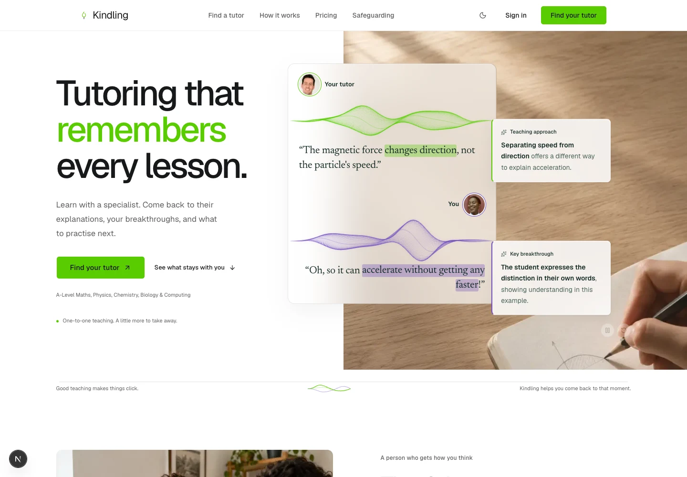

Could the insights feel more naturally attached?
Seven visual studies on the real hero. My strongest connector-free direction is D: docked annotations with precise material depth. A retains the clearest phrase-to-note relationship. These are static browser explorations, not shipped layouts or a completed responsive implementation.
Research, rationale and trade-offs · Close-up contact sheet
Notes meet the conversation edge, creating a physical attachment.

Established product and design-system examples
References were captured live at 1440 × 1000. Some reference pages retain small cookie banners. Screenshots establish visual observations, not conversion performance.